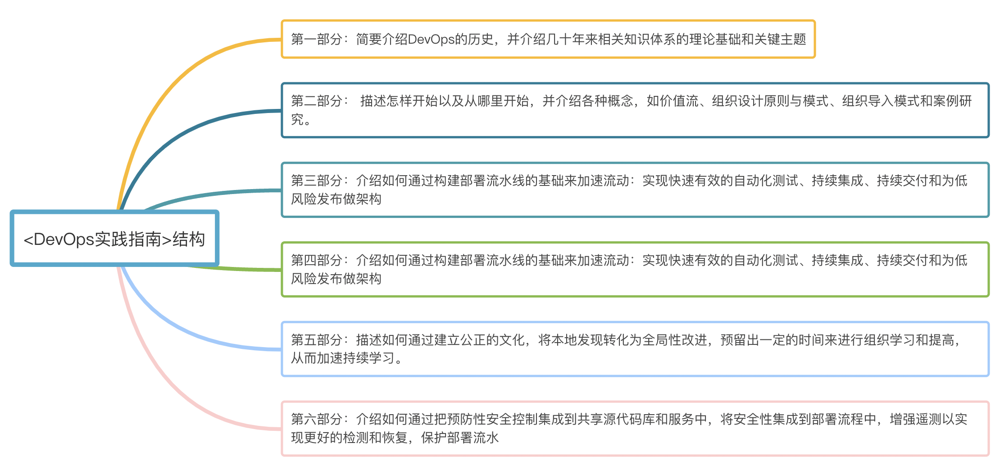
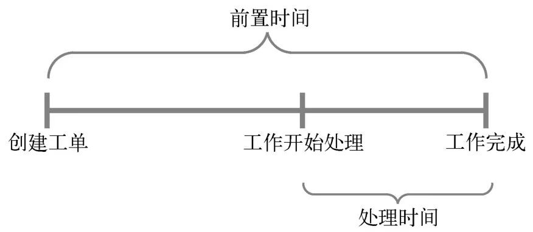
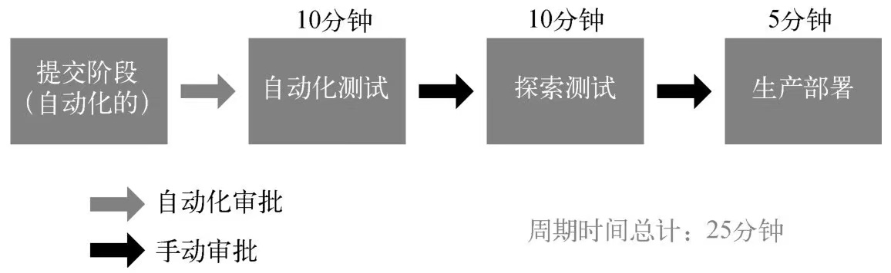

《DevOps实践指南》阅读笔记
全书结构
本书分为6个部分，使用“三步工作法”涵盖了DevOps理论及原则：
第一部分 简要介绍DevOps的历史，并介绍几十年来相关知识体系的理论基础和关键主题
第二部分 描述怎样开始以及从哪里开始，并介绍各种概念，如价值流、组织设计原则与模式、组织导入模式和案例研究。
第三部分 介绍如何通过构建部署流水线的基础来加速流动：实现快速有效的自动化测试、持续集成、持续交付和为低风险发布做架构
第四部分 讨论如何通过建立有效的生产环境遥测来发现和解决问题，从而加速和增强反馈，更好地预测问题和实现目标，获得反馈以便开发人员和运维人员可以安全地部署变更，将A/B测试集成到日常工作中，以及创建审查和协调流程来提高我们的工作质量。
第五部分 描述如何通过建立公正的文化，将本地发现转化为全局性改进，预留出一定的时间来进行组织学习和提高，从而加速持续学习。
第六部分 介绍如何通过把预防性安全控制集成到共享源代码库和服务中，将安全性集成到部署流程中，增强遥测以实现更好的检测和恢复，保护部署流水

什么是Devops
- 一种重视“软件开发人员（Dev）”和“IT运维技术人员（Ops）”之间沟通合作的文化、运动或惯例。通过自动化“软件交付”和“架构变更”的流程，来使得构建、测试、发布软件能够更加地快捷、频繁和可靠。
DevOps的理论基础
精益运动：
精益的两个主要原则包括：坚信前置时间（把原材料转换为成品所需的时间）是提升质量、客户满意度和员工幸福感的最佳度量指标之一；小批量任务的交付是缩短前置时间的一个关键因素。
敏捷宣言：
一个重要的原则是“频繁地交付可工作的软件，交付周期可以是数星期也可以是数月，推荐更短的周期”，并强调使用小批量任务进行增量发布，而非大规模的作业和瀑布流程的发布。同时，强调建立自组织的小团队，让成员在高度信任的环境中愉悦地工作。
持续交付：
基于持续构建、测试和集成的开发原则，Jez Humble和David Farley进行了延伸，提出了持续交付，并首次在2006年的敏捷大会上做了分享。在持续交付中，“部署流水线”确保代码和基础设施始终处于可部署状态，所有提交到主干的代码都可以安全地部署到生产环境。2009年，Tim Fitz在博客上发表了一篇题为“持续部署”的文章。
DevOps关键要素:技术价值流
制造业价值流定义为“一个组织基于客户的需求所执行的一系列有序的交付活动”，或者是“为了给客户设计、生产和提供产品或服务所需从事的一系列活动，它包含了信息流和物料流的双重价值”。
技术价值流定义为“把业务构想转化为向客户交付价值的、由技术驱动的服务所需要的流程”。  
技术价值的性能度量：前置时间和处理时间，二者越短效率越高。
- 高绩效者的交付周期是以分钟或小时来计量的，而低绩效者的交付周期则以周、月甚至季度来计量。
DevOps的内容:三步工作法
- 【流动原则】
第一步，实现开发到运维的工作快速地从左向右流动。为了最大程度地优化工作流，需要将工作可视化，减小每批次大小和等待间隔，通过内建质量杜绝向下游传递缺陷，并持续地优化全局目标。
【反馈原则】
第二步，在从右向左的每个阶段中，应用持续、快速的工作反馈机制。该方法通过放大反馈环防止问题复发，并能缩短问题检测周期，实现快速修复。
【持续学习和实验原则】
第三步，建立具有创意和高可信度的企业文化，支持动态的、严格的、科学的实验。
DevOps的最佳实践
组织结构:参考康威定律设计组织结构
康威定律：
“系统设计受限于组织自身的沟通结构。组织的规模越大，灵活性就越差，这种现象也就越明显。"
限界上下文（bounded context）原则：
Eric Evans在《领域驱动设计》一书中提出的概念。其思路是开发人员应该能够理解和更新服务的代码，而不必知道其对等服务的内部逻辑。
面向服务架构（Service-Oriented Architecture, SOA）就具有这种特征。面向服务架构这一概念在20世纪90年代被提出，它是一种支持独立测试和部署服务的架构方式，其典型特征是由具有限界上下文的松耦合服务组成
- 保持小规模（“两个比萨原则”）
—两个比萨够团队的所有成员吃，这样的团队通常有5～10人
流动原则
- 加速从开发、运维到交付给客户的正向流程。
可视化工作板：技术价值流中很难发现工作过程的阻塞点，例如，在哪里受阻了，在哪个环节产生了积压。为了能识别工作在哪里流动、排队或停滞，就需要将工作尽可能地可视化。可视化工作板是一种较好的工作方式，如在看板或Sprint计划板上，使用纸质或电子卡片将各项工作展示出来。
“停止开始，开始结束。”
在精益中，一个重要的经验是：为了缩短前置时间和提高交付物质量，应当持续不断地追求小批量模式。理论上，最小的批量是单件流，也就是每次操作只执行一个单位产品的处理
努力减少交接次数：要么用自动化方式执行大部分操作，要么重新调整组织结构，让团队不必依赖其他人就可以独立地为客户提供价值。
Goldratt博士在Beyond the Goal一书中提到：“在任何价值流中，总是有一个流动方向、一个约束点，任何不针对此约束点而做的优化都是假象
避免浪费：精益中对浪费的常用定义是“使用了超出客户需求和他们愿意支付范围的任何材料或资源的行为”。
制造业里7种主要的浪费类型：库存、过量生产、过度加工、运输、等待、移动和缺陷。
为非功能性需求预留20%的开发时间，减少技术债务
为了积极地管理技术债务，要确保至少把20%的开发和运维时间投入到重构、自动化工作、架构优化以及非功能性需求（有时也称为“质量属性”）上，例如可维护性、可管理性、可扩展性、可靠性、可测试性、可部署性和安全性等。
反馈原则
- 使组织构建安全、可靠的工作体系，并获得反馈。
实现快速可靠的自动化测试：
Mike Bland在描述部署变更的开发人员时说道：“恐惧是心灵杀手。它使新手不敢变更，因为他们不了解系统。它也使老手不敢变更，因为他们太了解系统。”他所在的团队致力于解决这个问题
目前存在各种各样的部署流水线工具，其中许多是开源软件（例如Jenkins、ThoughtWorks GoCD、Concourse、Bamboo、Microsoft Team Foundation Server、TeamCity和GitLab CI，以及基于云的解决方案，例如Travis CI和Snap）。
最快速的测试应该尽可能多地发现错误。如果大多数错误都是在验收测试和集成测试阶段发现的，那么开发人员收到反馈的速度要比单元测试发现错误时慢上好几个数量级——集成测试需要用到稀缺且复杂的集成测试环境（每次只能供一个团队使用），因此反馈更慢。
自动化测试最有效的方法：
通过测试驱动开发（Test-Driven Development, TDD）和验收测试驱动开发（Acceptance Test-Driven Development, ATDD）等技术在日常工作中编写自动化测试
集成非功能性需求测试和性能测试
可用性、可扩展性、容量以及安全性等。
安全性加固检查作为自动化测试的一部分
"安灯绳机制"
这个原则的典范是丰田的“安灯绳”。在丰田制造工厂里，每个工作中心都是一条绳索，每个工人和经理都受过培训，他们会在出现问题时拉下安灯绳，比如，当零件有缺陷时，当需要的零件用光时，或者是加工时间比文档中描述的长时。
在安灯绳被拉动时，团队领导就能第一时间得知并立即着手解决问题。如果问题不能在指定的时间（如55秒）内解决，就会停掉整个生产线，调动整个企业一起协作，直到成功地找出解决问题的对策。
"金丝雀发布模式和集群免疫系统发布模式"
金丝雀发布这个术语来自于煤矿工人把笼养的金丝雀带入矿井的传统。矿工通过金丝雀来了解矿井中一氧化碳的浓度。如果一氧化碳的浓度过高，金丝雀就会中毒，从而使矿工知道应该立刻撤离。
金丝雀发布模式下，我们会监控软件在每个环境中的运行情况。一旦出现问题，就回滚；否则就在下一个环境中进行部署。
集群免疫系统扩展了金丝雀发布模式，将生产环境的监控系统和发布流程联系起来，并在面向用户的生产系统的性能超出预定范围时（如新用户的转化率低于15%～20%），自动回滚代码。
建立能发现并解决问题的遥测系统
遥测被广泛定义为“一个自动化的通信过程，先在远程采集点上收集度量数据，然后传输给与之对应的接收端用于监控”。目标是在应用及其环境中建立遥测，包括生产环境、预生产环境和部署流水线。
持续学习与实验原则
- 打造出一种高度信任的文化，并将改进和创新融入日常工作中。
Sidney Dekker博士曾定义了安全文化的一些关键要素，并创造了“正义文化”这一术语。他写道：“不公正的事故和意外处理会阻碍安全调查，让安全工作者感到恐惧（而不是专注），让整个组织更加官僚（而非更加细致），甚至还会导致信息封闭、责任逃避和滋生自我保全意识。”
❏ 病态型：病态型组织的特点是组织中存在大量恐惧和威胁。由于政治原因，个体为了保全自身利益，通常会隐瞒真相或者歪曲事实。在这种组织中，故障和事故经常被隐瞒。
❏ 官僚型：官僚型组织的特点是规则和流程僵化，所有部门通常都“自扫门前雪”。在这种组织中，通过评判系统处理事故，结果往往恩威兼施。
❏ 生机型：生机型组织的特点是积极探索和分享信息，让组织更好地履行使命。在这种组织中，整个价值流中所有的员工共同承担责任，对事故进行积极反思，并进行真正的根因调查。
通过明确预留时间来改善日常工作，包括预留时间来偿还技术债、修复缺陷、重构和优化代码和环境。可以在每个开发周期的间歇中预留一段时间，或者安排改善闪电战（kaizen blitze）时段，让工程师通过自组团队的方式来解决他们感兴趣的问题。
在技术价值流中，建立全局知识库。
例如，把所有事故报告转化成可搜索的知识库，让有需要的团队能更加方便地使用它去解决类似问题，同时建立起组织级的共享源代码库，让所有人可以方便地使用整个组织的代码、库和配置。这些机制有助于把个人的专业知识转化为服务更多成员的集体智慧。
每个人在将代码提交到主干以前，必须要有同行来评审他们的变更（例如代码、环境等）。
❏ 每个人都应该持续关注其他成员的提交活动，以便识别和审查出潜在的冲突。
❏ 定义哪些变更属于高风险的变更，从而决定是否需要请领域专家（例如数据库变更、安全性敏感的身份验证模块等）来进行审查。
其他有趣内容
恶性循环三部曲 —— 软件开发反面教材
第一部曲开始于IT运维，我们的目标是让应用程序和基础设施持续运行，以便公司向客户交付价值。我们日常工作中的很多问题源于应用程序和基础设施过于复杂、异常脆弱、文档不完备。这就是我们背负的技术债务，这就是我们每天所处的工作环境。总是承诺，一有时间，我们一定会处理这个烂摊子，但是这个时刻永远都不会到来。
第二部曲始于有人必须去弥补最近未兑现的承诺——这可能是某个产品经理承诺了一个更大规模、更大胆的吸引客户的功能，或者是业务主管设置了一个更高的收益目标。
第三部曲，也就是最后一部曲。所有人都越来越忙，工作所消耗的时间越来越多，沟通变得更加缓慢，工作积压得越来越多。我们的工作耦合得更加紧密，即使是很小的行动也会导致较大的事故，我们更加害怕和拒绝做出变更。
困于这种恶性循环中多年，特别是那些处于开发下游的人，经常感觉被困在一个注定失败的系统中，无力改变结果。伴随这种无力感的是倦怠感，还有疲劳、愤世嫉俗，甚至是无助和绝望。
每家公司都是一个科技公司
软件开发高管和早期的DevOps记录者之一Christopher Little所说：“每个公司都是科技公司，无论他们认为自己处在哪个行业。银行也只是拥有银行执照的IT公司而已。”
事件严重性：某个软件问题的严重程度。严重性会直接影响服务和客户。
■ 总停机时间：服务完全不可用的时间。
■ 检测时间：发现问题所需的时间。
■ 解决时间：知道问题以后恢复服务所用时间。